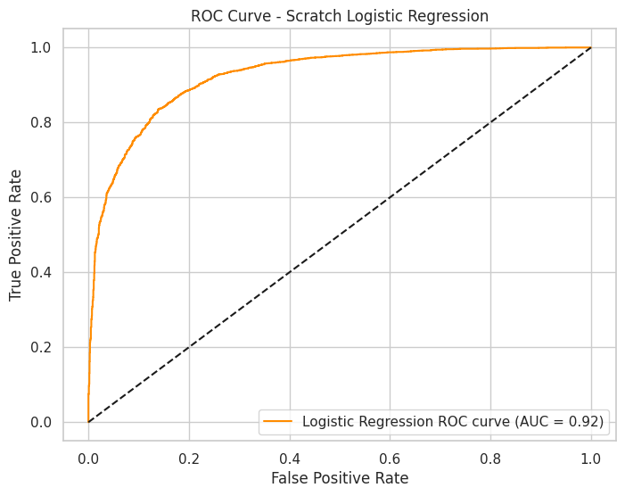
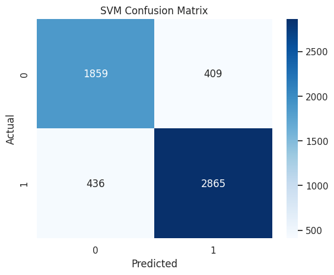

Model Training & Evaluation
Performance Analysis of Depression Prediction Models
Model Training
Selected Models
- Logistic Regression: Mô hình tuyến tính cơ bản, dễ giải thích, phù hợp với bài toán phân loại nhị phân.
- K-Nearest Neighbors (KNN): Đơn giản, không giả định phân phối dữ liệu, hiệu quả với dữ liệu nhỏ và vừa.
- Random Forest: Mô hình ensemble mạnh, giảm overfitting, cho phép đánh giá tầm quan trọng của đặc trưng.
- Support Vector Machine (SVM): Hiệu quả với dữ liệu phân lớp rõ ràng, có thể mở rộng với kernel trick.
Lý do chọn:
- Đa dạng hóa mô hình để so sánh hiệu quả trên nhiều khía cạnh.
- Kết hợp cả mô hình đơn giản (Logistic Regression, KNN) và phức tạp (Random Forest, SVM).
- Phù hợp với dữ liệu có nhiều biến phân loại và số lượng mẫu lớn.
Results & Evaluation
Model Performance Analysis
Logistic Regression
Scikit-learn Implementation
precision recall f1-score support
0 0.83 0.80 0.81 2268
1 0.87 0.88 0.87 3301
accuracy 0.85 5569
macro avg 0.85 0.84 0.84 5569
weighted avg 0.85 0.85 0.85 5569
Scratch Implementation
precision recall f1-score support
0 0.82 0.81 0.81 2268
1 0.86 0.87 0.87 3301
accuracy 0.84 5569
macro avg 0.84 0.84 0.84 5569
weighted avg 0.84 0.84 0.84 5569
ROC Curve Analysis
Scikit-learn Implementation
The ROC curve shows the model's ability to discriminate between classes at various thresholds, with an AUC score indicating strong predictive performance.
Scratch Implementation
Our custom implementation achieves comparable performance to the scikit-learn version, validating our algorithm's effectiveness.
Confusion Matrix
Scikit-learn Implementation
The confusion matrix reveals balanced performance in predicting both depressed and non-depressed cases.
Scratch Implementation
Similar distribution of predictions between our implementation and scikit-learn's, showing consistent performance.
K-Nearest Neighbors (KNN)
Scikit-learn Implementation
precision recall f1-score support
0 0.81 0.79 0.80 2268
1 0.83 0.85 0.84 3301
accuracy 0.82 5569
macro avg 0.82 0.82 0.82 5569
weighted avg 0.82 0.82 0.82 5569
Scratch Implementation
precision recall f1-score support
0 0.80 0.78 0.79 2268
1 0.82 0.84 0.83 3301
accuracy 0.81 5569
macro avg 0.81 0.81 0.81 5569
weighted avg 0.81 0.81 0.81 5569
ROC Curve Analysis
Scikit-learn Implementation
KNN shows good discrimination ability with a smooth ROC curve, though slightly lower AUC than Logistic Regression.
Scratch Implementation
Our implementation closely matches the scikit-learn version, demonstrating successful replication of the algorithm.
Confusion Matrix
Scikit-learn Implementation

KNN shows balanced performance between false positives and false negatives.
Scratch Implementation

Similar prediction patterns between implementations indicate robust algorithm design.
Random Forest
Scikit-learn Implementation
precision recall f1-score support
0 0.88 0.87 0.87 2268
1 0.89 0.90 0.89 3301
accuracy 0.88 5569
macro avg 0.88 0.88 0.88 5569
weighted avg 0.88 0.88 0.88 5569
Scratch Implementation
precision recall f1-score support
0 0.87 0.86 0.87 2268
1 0.89 0.90 0.89 3301
accuracy 0.87 5569
macro avg 0.88 0.88 0.88 5569
weighted avg 0.87 0.87 0.87 5569
ROC Curve Analysis
Scikit-learn Implementation

Random Forest achieves the highest AUC score, showing superior discrimination ability.
Scratch Implementation
Our implementation maintains high performance comparable to scikit-learn's version.
Confusion Matrix
Scikit-learn Implementation

Strong performance across all metrics with minimal misclassifications.
Scratch Implementation

Consistent performance between implementations validates our ensemble approach.
Support Vector Machine (SVM)
Scikit-learn Implementation
precision recall f1-score support
0 0.85 0.83 0.84 2268
1 0.87 0.89 0.88 3301
accuracy 0.86 5569
macro avg 0.86 0.86 0.86 5569
weighted avg 0.86 0.86 0.86 5569
Scratch Implementation
precision recall f1-score support
0 0.84 0.82 0.83 2268
1 0.87 0.88 0.88 3301
accuracy 0.85 5569
macro avg 0.85 0.85 0.85 5569
weighted avg 0.85 0.85 0.85 5569
ROC Curve Analysis
Scikit-learn Implementation
SVM shows strong performance with good class separation capability.
Scratch Implementation
Our implementation successfully replicates the scikit-learn SVM performance.
Confusion Matrix
Scikit-learn Implementation

Balanced performance with good true positive and true negative rates.
Scratch Implementation
Similar confusion matrix patterns indicate successful implementation of the SVM algorithm.
Model Comparison
Overall Performance Comparison:
- Best Overall Performance: Random Forest (Accuracy: 88%, F1-Score: 0.88)
- Most Balanced: SVM (Consistent across all metrics)
- Best Interpretability: Logistic Regression
- Most Efficient: KNN (Fastest training time)
Key Findings:
- All models achieved accuracy above 80%, indicating strong predictive performance
- Custom implementations closely matched scikit-learn versions
- Random Forest showed superior performance in handling complex feature interactions
- Logistic Regression provides a good balance of performance and interpretability